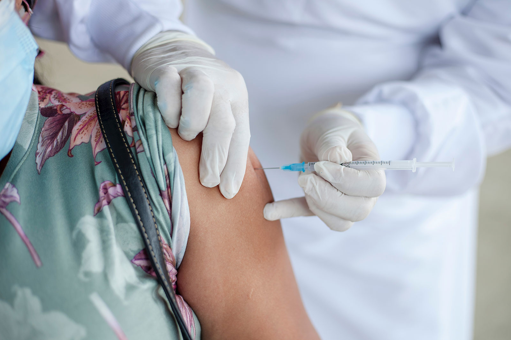

3.1 Até 2030, reduzir a taxa de mortalidade materna global para menos de 70 mortes por 100.000 nascidos vivos
3.2 Até 2030, acabar com as mortes evitáveis de recém-nascidos e crianças menores de 5 anos, com todos os países objetivando reduzir a mortalidade neonatal para pelo menos 12 por 1.000 nascidos vivos e a mortalidade de crianças menores de 5 anos para pelo menos 25 por 1.000 nascidos vivos
3.3 Até 2030, acabar com as epidemias de AIDS, tuberculose, malária e doenças tropicais negligenciadas, e combater a hepatite, doenças transmitidas pela água, e outras doenças transmissíveis
3.4 Até 2030, reduzir em um terço a mortalidade prematura por doenças não transmissíveis via prevenção e tratamento, e promover a saúde mental e o bem-estar

3.5 Reforçar a prevenção e o tratamento do abuso de substâncias, incluindo o abuso de drogas entorpecentes e uso nocivo do álcool
3.6 Até 2020, reduzir pela metade as mortes e os ferimentos globais por acidentes em estradas
3.7 Até 2030, assegurar o acesso universal aos serviços de saúde sexual e reprodutiva, incluindo o planejamento familiar, informação e educação, bem como a integração da saúde reprodutiva em estratégias e programas nacionais
3.8 Atingir a cobertura universal de saúde, incluindo a proteção do risco financeiro, o acesso a serviços de saúde essenciais de qualidade e o acesso a medicamentos e vacinas essenciais seguros, eficazes, de qualidade e a preços acessíveis para todos
3.9 Até 2030, reduzir substancialmente o número de mortes e doenças por produtos químicos perigosos, contaminação e poluição do ar e água do solo
3.a Fortalecer a implementação da Convenção-Quadro para o Controle do Tabaco em todos os países, conforme apropriado
3.b Apoiar a pesquisa e o desenvolvimento de vacinas e medicamentos para as doenças transmissíveis e não transmissíveis, que afetam principalmente
os países em desenvolvimento, proporcionar o acesso a medicamentos e vacinas essenciais a preços acessíveis, de acordo com a Declaração de Doha,
que afirma o direito dos países em desenvolvimento de utilizarem plenamente as disposições do acordo TRIPS sobre flexibilidades para proteger a saúde pública e, em particular, proporcionar o acesso a medicamentos para todos
3.c Aumentar substancialmente o financiamento da saúde e o recrutamento, desenvolvimento e formação, e retenção do pessoal de saúde nos países em desenvolvimento, especialmente nos países menos desenvolvidos e nos pequenos Estados insulares em desenvolvimento
3.d Reforçar a capacidade de todos os países, particularmente os países em desenvolvimento, para o alerta precoce, redução de riscos e gerenciamento de riscos nacionais e globais de saúde